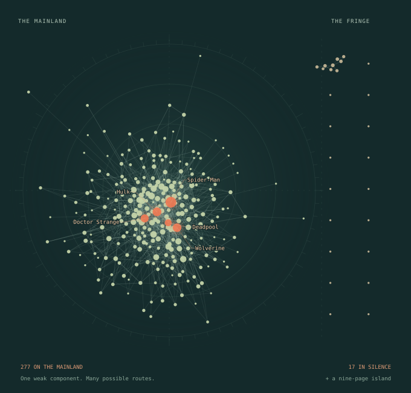

JUST CONNECTED / WEEK 2
Compared to what? Models, nulls, and the popularity trap.
Does Marvel look more like Barabási–Albert or pure chance? Why do your superhero friends have more friends than you? And what survives when you rewire 1,784 hyperlinks?
Read Week 2
FROM THE SHARED MARVEL PLAYGROUNDREAD & EXPLORE